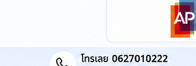
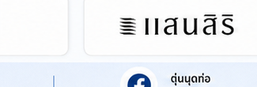
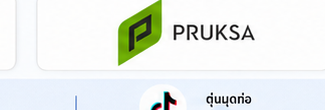
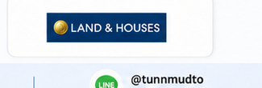

ล้างท่อสะอาด เคลียร์ตะกอน ส่งมอบงานมั่นใจทุกโครงการ
บริการลอกบ่อพักและท่อระบายน้ำคอนกรีตสี่เหลี่ยม ขจัดเลน ตะกอนดิน ทราย และสิ่งอุดตัน สำหรับไซต์โครงการบ้านจัดสรรเตรียมส่งมอบ และหมู่บ้านที่มีผู้อยู่อาศัย ด้วยทีมงานภาคสนามจริง ปฏิบัติงานรัดกุม สะอาด เรียบร้อย
ปลอดภัยรัดกุม
ทำงานจากบนพื้นผิว มีกรวยกั้นทาง
รวดเร็ว คล่องตัว
เข้าได้ทุกซอยแคบ ไม่กีดขวางลูกบ้าน
รายงานชัดเจน
ถ่ายรูปก่อน-หลัง ตรวจสอบได้ทุกจุด

ตอบโจทย์ทั้งโครงการจัดสรรและชุมชนที่อยู่อาศัย
เข้าใจความต้องการเฉพาะทางของแต่ละหน้างาน ทำงานจบจริง ไม่ทิ้งภาระไว้ให้เจ้าของ
โครงการบ้านจัดสรรเตรียมส่งมอบงาน
ช่วงก่อสร้างมักมีเศษปูน ทราย ดินลูกรัง และเศษวัสดุตกค้างในบ่อพักและท่อระบายน้ำ หากไม่เคลียร์ออกอาจไม่ผ่านการตรวจรับมอบงาน หรือทำให้น้ำท่วมขังทันทีหลังลูกบ้านย้ายเข้า
- ลอกขจัดเศษปูน ทราย และดินตะกอนก้นบ่อพักคอนกรีตทุกจุด
- ทะลวงและตรวจสอบแนวท่อเชื่อมต่อระหว่างบ่อ ให้น้ำไหลสะดวก
- มีรูปถ่ายรายงานสรุปผลงานแต่ละบ่อ เพื่อใช้ประกอบการตรวจรับมอบ
หมู่บ้านจัดสรรที่มีผู้อยู่อาศัยแล้ว
การดูแลระบบระบายน้ำชุมชนเพื่อป้องกันน้ำเอ่อล้นเข้าบ้านในช่วงฝนตกหนัก ขจัดไขมัน เลนดำ และกลิ่นรบกวน โดยรักษาความสะอาดและความเป็นระเบียบของหน้าบ้านลูกบ้านเป็นอันดับหนึ่ง
- กั้นกรวยจราจรปลอดภัย ไม่กีดขวางทางเข้า-ออกของเพื่อนบ้าน
- ตักเลนใส่กระสอบมิดชิดทันที เลนไม่เลอะเทอะเปรอะเปื้อนผิวถนน
- ขนย้ายกากตะกอนขึ้นรถกระบะไปกำจัดตามระเบียบ ไม่ทิ้งตกค้างในพื้นที่
บริการลอกท่อและดูแลระบบระบายน้ำ
คัดสรรบริการจากเครื่องมือและความเชี่ยวชาญภาคสนามจริง ทำงานจบ สะอาด ตรงไปตรงมา
 บ่อพักคอนกรีตสี่เหลี่ยม
บ่อพักคอนกรีตสี่เหลี่ยม
ลอกบ่อพักและขจัดเลนสะสม
ตักเลน ขี้โคลน และตะกอนก้นบ่อพักคอนกรีตสี่เหลี่ยมตามแนวถนนและหน้าบ้าน ด้วยกระบอกตักเลนเฉพาะทาง ดึงตะกอนขึ้นมาจนถึงก้นบ่อแท้จริง
 เครื่องมือเฉพาะทาง
เครื่องมือเฉพาะทาง
งานบ่อพักลึกด้วยรอกโซ่ทุ่นแรง
สำหรับบ่อพักที่มีความลึกพิเศษ ทีมงานมีโครงเหล็กตั้งคร่อมปากบ่อพร้อมรอกโซ่ทุ่นแรง ช่วยให้การชักลากเลนหนักขึ้นมาได้อย่างปลอดภัยและมีประสิทธิภาพ
 ระบบท่อเชื่อม
ระบบท่อเชื่อม
เคลียร์ท่อเชื่อมระหว่างบ่อพัก
แหย่ทะลวงแนวท่อคอนกรีตและท่อ PVC ที่เชื่อมระหว่างบ่อพัก ปลดล็อกสิ่งอุดตัน เศษหิน ดินทราย ให้น้ำระบายไหลถ่ายเทได้อย่างต่อเนื่อง
 โครงการก่อสร้าง
โครงการก่อสร้าง
ตรวจลอกท่อก่อนส่งมอบโครงการ
เคลียร์ระบบระบายน้ำในโครงการบ้านจัดสรรที่กำลังก่อสร้าง ขจัดเศษปูนทรายตกค้าง วัดระดับความลึกบ่อ และเช็คแนวท่อเพื่อพร้อมส่งมอบงานให้เจ้าของโครงการ
 จัดการกากตะกอน
จัดการกากตะกอน
บรรจุกระสอบและขนย้ายไปกำจัด
เลนและขี้โคลนทุกกระสอบจะถูกมัดปากถุงอย่างแน่นหนา ลำเลียงขึ้นรถกระบะคอก และนำออกจากพื้นที่ชุมชนไปทิ้งในสถานที่ที่ถูกต้อง ไม่ทิ้งไว้ข้างทาง
 รายงานความโปร่งใส
รายงานความโปร่งใส
รายงานภาพถ่ายสภาพก่อน-หลัง
ถ่ายภาพสภาพบ่อพักก่อนลอก ระหว่างการปฏิบัติงาน และหลังลอกเสร็จสิ้น (ก้นบ่อสะอาด น้ำใสไหลสะดวก) ให้กรรมการนิติฯ และวิศวกรโครงการตรวจสอบได้จริง
ลูกค้าของเรา
ผู้พัฒนาอสังหาริมทรัพย์ชั้นนำที่ไว้วางใจในคุณภาพบริการของเรา




4 ขั้นตอนมาตรฐานการทำงานของตุ่นมุดท่อ
ทำงานเป็นระบบ รัดกุม ปลอดภัย และส่งมอบงานอย่างมืออาชีพ
สำรวจและวัดระดับตะกอน
เปิดฝาบ่อคอนกรีตสี่เหลี่ยม ตรวจสอบปริมาณตะกอนดินเลน ความลึก และสภาพท่อเชื่อมต่อ เพื่อประเมินหน้างานอย่างแม่นยำ
กั้นแนวความปลอดภัย
วางกรวยจราจรส้มขาวกั้นรอบบ่อพักและตามแนวถนนหน้างาน จัดระเบียบการสัญจรให้ลูกบ้านเดินทางเข้า-ออกได้ปลอดภัย
ลอกเลนและบรรจุกระสอบ
ใช้กระบอกตักเลนเหล็กและรอกโซ่ทุ่นแรง ดึงเลนขึ้นมาจากก้นบ่อ บรรจุใส่กระสอบหนาทันที เพื่อไม่ให้เปรอะเปื้อนพื้นคอนกรีต
ทำความสะอาดและส่งมอบงาน
เก็บกวาดรอบปากบ่อ ปิดฝาคอนกรีตคืนสภาพ ลำเลียงกระสอบเลนขึ้นรถกระบะ และจัดทำรายงานรูปถ่ายส่งมอบงาน
แกลเลอรีผลงานภาคสนามจริง
รวมภาพการทำงานจริงในโครงการบ้านจัดสรรและหมู่บ้านต่างๆ ปราศจากการแต่งภาพเกินจริง สะท้อนหน้างานและอุปกรณ์ที่ใช้งานจริง

วัดระดับและสำรวจบ่อพักหน้าบ้าน
หน้าบ้านทาวน์โฮมสะอาด ตรวจเช็คปริมาณตะกอนก่อนเริ่มงาน

กั้นกรวยจราจรและความปลอดภัยในซอย
รถกระบะตอนเดียวคอกเหล็ก บรรทุกกระสอบเลน ไม่กีดขวางทาง
การใช้กระบอกตักเลนดึงโคลนขึ้นบ่อ
ช่าง 2 คนช่วยกันดึงและถ่ายเทเลนลงในกระสอบอย่างมิดชิด

ทีมงานภาคสนามจริง 9 คน
ช่างสวมเสื้อทีมสีเขียวเข้มพร้อมลุยหน้างานจริง

ตรวจเช็คบ่อพักคอนกรีตช่วงปรับหน้าดิน
ตรวจสอบบ่อพักคอนกรีตสี่เหลี่ยมก่อนเทพื้นถนน
ทะลวงแนวท่อระบายน้ำระหว่างบ่อพัก
ทีมงานใช้ท่อช่วยเช็คการอุดตันของท่อใต้ถนน

ทัศนียภาพไซต์โครงการจัดสรรทั้งซอย
ดูแลระบบระบายน้ำโครงการบ้านจัดสรรเตรียมส่งมอบ
การติดตั้งโครงรอกโซ่ทุ่นแรงคร่อมบ่อ
เครื่องมือช่างเฉพาะทางสำหรับบ่อลึก หน้างานบ้านจัดสรร

บรรจุตะกอนดินเลนลงในกระสอบ
มัดปากกระสอบแน่นหนา วางเรียบร้อย ไม่ไหลเลอะพื้น

ปริมาณตะกอนที่ลอกได้จากก้นบ่อ
กากตะกอนปริมาณมากถูกตักขึ้นมาใส่กระสอบอย่างเป็นระเบียบ
เตรียมขนย้ายกากตะกอนออกจากพื้นที่
รถกระบะพร้อมขนย้ายกระสอบเลนเปียกไปกำจัดอย่างถูกต้อง
สภาพก้นบ่อพักคอนกรีตหลังลอกสะอาด
น้ำใส ไร้สิ่งกีดขวางทางน้ำ พร้อมถ่ายภาพส่งมอบงาน
ทีมงานภาคสนามตัวจริง พร้อมลุยทุกสภาพหน้างาน
"ตุ่นมุดท่อ" ไม่ใช่บริษัทนั่งโต๊ะ หรือนายหน้าส่งต่องาน เราคือทีมงานช่างภาคสนามที่ลงมือทำงานจริง ด้วยความชำนาญในระบบระบายน้ำของหมู่บ้านจัดสรรและโครงการก่อสร้างไทย
คำถามที่ผู้รับเหมาและนิติบุคคลมักสอบถาม
รวบรวมคำตอบชัดเจน ตรงไปตรงมา เพื่อความมั่นใจก่อนตัดสินใจใช้บริการ
ไม่เลอะเทอะครับ ทีมงานตักเลนขึ้นมาแล้วถ่ายเทลงในกระสอบปุ๋ย/กระสอบสานหนาทันที มีการกั้นแนวพื้นที่ และล้างทำความสะอาดบริเวณรอบปากบ่อพักหลังเสร็จงาน เลนทุกกระสอบจะถูกมัดปากถุงและขนขึ้นรถกระบะนำออกจากพื้นที่ทันที
เข้าได้สะดวกทุกซอยครับ เพราะเราใช้รถกระบะตอนเดียวติดตั้งคอกเหล็กในการขนถ่ายอุปกรณ์และกระสอบตะกอน มีความคล่องตัวสูง เข้าซอยแคบ ซอยตัน หรือถนนหน้าบ้านทาวน์โฮมได้โดยไม่กีดขวางการสัญจรของเพื่อนบ้าน
มีให้ครบถ้วนครับ ทีมงานจะถ่ายภาพสภาพบ่อพักก่อนลอก ระหว่างการทำงาน และสภาพก้นบ่อพักหลังลอกสะอาด เพื่อให้นิติบุคคลนำไปรายงานลูกบ้าน หรือผู้รับเหมานำไปใช้ประกอบการส่งมอบงานโครงการ
ราคาขึ้นอยู่กับจำนวนบ่อพัก ความลึก สภาพตะกอน และระยะทาง ท่านสามารถถ่ายรูปสภาพบ่อพัก หรือแจ้งจำนวนบ่อและพิกัดโครงการส่งมาทาง LINE: @tunnmudto เพื่อให้ทีมงานประเมินราคาเบื้องต้นได้ฟรีทันที
ติดต่อทีมงานตุ่นมุดท่อ
พร้อมสำรวจหน้างานและให้คำปรึกษา ทั้งโครงการจัดสรรและหมู่บ้านในกรุงเทพฯ-ปริมณฑล
ฝากข้อมูลเพื่อประเมินราคา
กรอกข้อมูลเบื้องต้นเพื่อให้ทีมงานโทรกลับหรือติดต่อทาง LINE